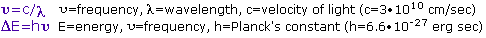

In previous sections of this text the structural formulas of hundreds of organic compounds have been reported, often with very little supporting evidence. These structures, and millions of others described in the scientific literature, are in fact based upon sound experimental evidence, which was omitted at the time in order to focus on other aspects of the subject. Much of the most compelling evidence for structure comes from spectroscopic experiments, as will be demonstrated in the following topics.
The Light of Knowledge is an often used phrase, but it is particularly appropriate in reference to spectroscopy. Most of what we know about the structure of atoms and molecules comes from studying their interaction with light (electromagnetic radiation). Different regions of the electromagnetic spectrum provide different kinds of information as a result of such interactions. Realizing that light may be considered to have both wave-like and particle-like characteristics, it is useful to consider that a given frequency or wavelength of light is associated with a "light quanta" of energy we now call a photon. As noted in the following equations, frequency and energy change proportionally, but wavelength has an inverse relationship to these quantities.

In order to "see" a molecule, we must use light having a wavelength smaller than the molecule itself (roughly 1 to 15 angstrom units). Such radiation is found in the X-ray region of the spectrum, and the field of X-ray crystallography yields remarkably detailed pictures of molecular structures amenable to examination. The chief limiting factor here is the need for high quality crystals of the compound being studied. The methods of X-ray crystallography are too complex to be described here; nevertheless, as automatic instrumentation and data handling techniques improve, it will undoubtedly prove to be the procedure of choice for structure determination. The spectroscopic techniques described below do not provide a three-dimensional picture of a molecule, but instead yield information about certain characteristic features. A brief summary of this information follows:
• Mass Spectrometry: Sample molecules are ionized by high energy electrons. The mass to charge ratio of these ions is measured very accurately by electrostatic acceleration and magnetic field perturbation, providing a precise molecular weight. Ion fragmentation patterns may be related to the structure of the molecular ion. • Ultraviolet-Visible Spectroscopy: Absorption of this relatively high-energy light causes electronic excitation. The easily accessible part of this region (wavelengths of 200 to 800 nm) shows absorption only if conjugated pi-electron systems are present. • Infrared Spectroscopy: Absorption of this lower energy radiation causes vibrational and rotational excitation of groups of atoms. within the molecule. Because of their characteristic absorptions identification of functional groups is easily accomplished. • Nuclear Magnetic Resonance Spectroscopy: Absorption in the low-energy radio-frequency part of the spectrum causes excitation of nuclear spin states. NMR spectrometers are tuned to certain nuclei (e.g. 1H, 13C, 19F & 31P). For a given type of nucleus, high-resolution spectroscopy distinguishes and counts atoms in different locations in the molecule.
Mass Spectrometry
Ultraviolet-Visible Spectroscopy
Infrared Spectroscopy
Nuclear Magnetic Resonance Spectroscopy (NMR)
At various points throughout this text, links to supplementary information or special topics will be located in shaded boxes of this kind.